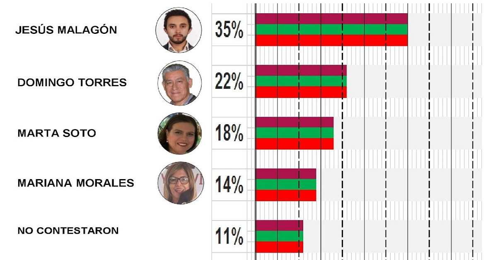

¿Conoces alguno de estos aspirantes a Diputado Federal?
Se encuestó a la ciudadanía Acambarence, se les pregunto si conocía alguno de los aspirantes a diputados federales por el distrito 14 que comprende los municipios de Acámbaro, Jerécuaro, Taranda, Coroneo, Tarimoro, Apaseo el Alto y Apaseo el Grande ... Seguir Leyendo